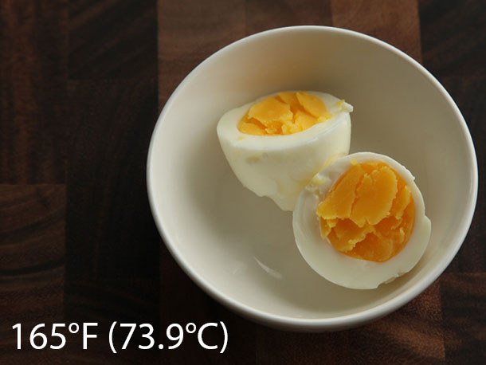
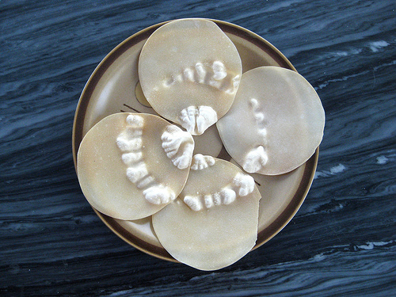
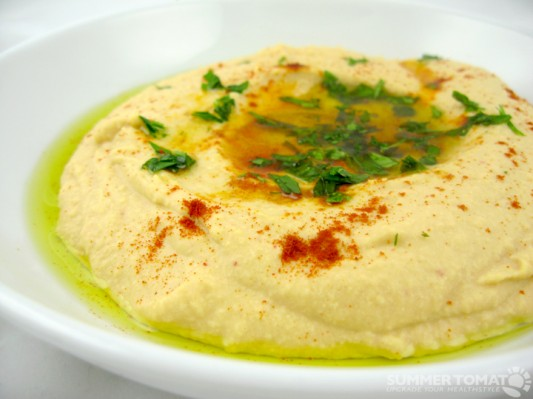
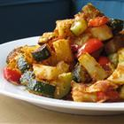
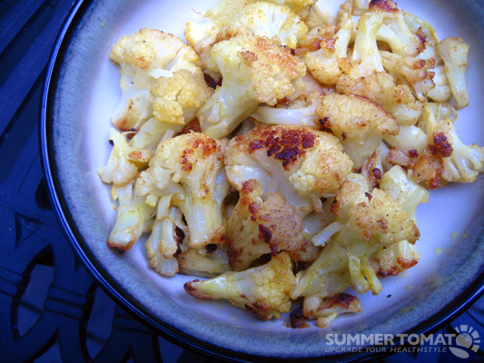
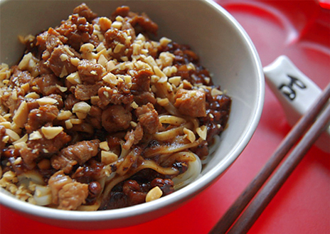
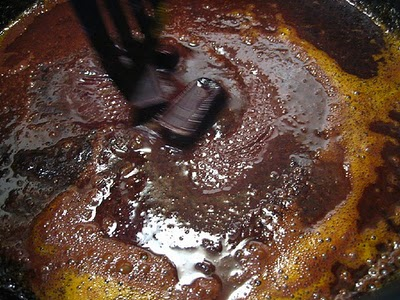
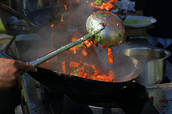

Table of Contents
Food Stuff
DIY Peanut Nut Butter
Cafeteria uses PB's Nuts Creamunchy, which is double the price of Whole Foods. Wow. https://www.cbsnuts.com/store/cbsnuts-non-gmo-creamunchy-peanut-butter-8lb
Also, the Olde Tyme grinders specifically don't do smooth somehow, after talking with sales rep on phone.
Mom says strong motor. Comparison: https://mixitbakeit.com/compare-kitchen-aid-stand-mixers/. https://portland.craigslist.org/clk/app/d/vancouver-kitchenaid-mixer/6887335168.html
WOO HOO!The answer is yes. Having read a number of homemade peanut butter posts, and coming to the conclusion that no one was brave enough to take a chance ruining their mixer or attachment, I took it on myself to try it with the meat grinder. I used the small plate. What came out in just seconds, looked like spaghetti. On closer inspection it is just smooth, slightly grainy peanut butter. No strain on the mixer. I ran it through a second time. It came out with a sheen that indicated the nut oils were being pressed out of the nuts in the process.
I have used food processors. The drawback is that even the heavy duty food processors will burn out if you do it too often. It also takes a while to do it this way, and can be a pain to clean up.
I bought two different models of Nostalgia peanut butter machines. Both work but not optimally.
The Kitchen Aide mixer with the meat grinder is a very simple and fast way to make peanut butter with no additives (just peanuts). I'm ready to sell my other attempts on craigslist.
Note: peanuts are actually very oily beans. They are not hard, and as the oils are extruded, the knife is lubricated. As I stated, no strain on the mixer at all.
Mexican Candy
Someone gave me some Pulparindo in a bag of other candies. Awesome  .
.
Maybe buy the big variety pack (assuming it has mango to try) and bring to work…
- Otherwise try the (all 4 flavors) bundle on amazon for $13. here
Want to try out de la rosa, which I was also given.
Tasting Session
I want to try a tasting session of heat (jalapeno or hot sauce), half and half, sugar (syrup form, or maybe just sugar diluted in water), salt (maybe ok in kernels, might want to dilute), umami (msg/mushroom?), green powder, acid (orange juice? lemons / limes )
- How to dilute/balance? taste of heat. Fat? Sugar? https://cooking.stackexchange.com/a/1126
- Why is green powder really bitter in high concentrations but approaches chocolatey in high dilutions with water?
- Maybe it is less able to touch tongue? Makes sense…
- Diluting with applesauce doesn't work, I think because of the inability of the powder to dilute into the apple fiber
- Does it work better with orange juice?
- Why does ice cream taste good, when them separately taste not great? Same probably with sweet and salty.
Spicy Mac & Cheese
A very grown up dish, actually. Add lots of cheese, and then add seared andouille sausage and make sure your very big and frilly pasta is al dente. Top with more cheese. And add some pepper flakes for good measure.
{kind=link}
Tortilla Soup
Sauteing the tomatoes seems helpful. As well as adding some kind of spice.
Recommends getting very fresh corn, although smart user comments point out that this isn't needed as much anymore with new corn varieties. https://www.seriouseats.com/2012/08/the-food-lab-life-the-best-corn-chowder.html
New England Style Clam Chowder
Not that hard to make actually.
- Clams, buy from restaurant supermarket. By us it's Cash n' Carry / Smart Foodservice Warehouse. Maybe Costco has them too?
Shallots? Like a small sweet onion. $2/pound, so kinda spendy. Can probably go with onion next time, but smelled great preparing it!Both give interesting…smells…the next few days.
- Bacon or a quarter ham. Forgot this this time, might have been nice.
- Corn, potatoes, carrot. Maybe some green!
- Butter? Didn't have. Maybe don't need? Would probably make roux taste better…
I liked this recipe. https://deadspin.com/how-to-make-clam-chowder-like-real-fackin-new-englandah-1614954906. And maybe this one: https://cooking.nytimes.com/recipes/1016717-the-best-clam-chowder41
Still don't know how to make roux. But to thicken, you swish flour/corn starch in cold water to dissolve, then stir into hot liquid to … cook it? Get the gluten going. Want to make it thick so when you add the cream at the end, it's not super runny.
Add half and half or cream. Or maybe just some Whole milk?
Spices
Winco
Chipotle, too hot and limey.
Pasta
Long spaghetti strands don't work well for keeping spaghetti sauce off of one's shirt :/
Power bars
How to bind without sugar…
Cracker Jack'd is a nice one, although discontinued.
{kind=link}
- Ingredient list is whole oats, corn fiber, vegetable oil, and crisp rice. Interesting…so it's fried?
{kind=link}
Oatmeal bars
From Erica
Granola Bars Servings: 32
1 c vegetable oil (olive) 5 eggs 1/2 c applesauce or omit & increase honey to 1 cup. 1/2 c (see note below*) honey, or brown rice syrup, pure maple syrup (or mixture of all) 1 1/2 c natural creamy peanut butter 1 tbs vanilla extract 1 c whole wheat flour 1 1/2 tsp baking powder 3/4 tsp salt 4 1/2 c old-fashioned oats 6 c rice krispies 3 c nuts (sunflower seeds or any other kind chopped) 1 1/2 c semi-sweet chocolate chips (P. Butter Chips, carob chips) opt. 1 tbs cinnamon (omit if adding P. Butter)
In a large mixer bowl, combine the oil, sweetener, peanut butter, vanilla and eggs. Add flour, cinnamon (not if using peanut butter), baking powder and salt. Mix well. Measure out dry ingredients, then with a large spoon, stir oats, cereal, nuts, fruit, or baking chips into liquid mixture. Spray treat or grease two 9×13“ pans (glass works the best). Put plastic wrap or wax paper over the granola batter and press the mixture evenly into the bottom of the pan. Score the bars for easier cutting if desired. For chewy bars, bake at 300° for 25 minutes. The edges will just be beginning to brown, but the top won't be brown yet. Remove from the oven and cool for 10 minutes. Cut into the bars by slicing through the middle lengthwise, then crosswise 7 times. Cool completely. For crunchy bars, bake at 300° until the surface is golden brown all over about 40-50 minutes. Cool completely and then cut as above. To freeze for quick individual servings, put each bar in a fold-top sandwich bag, then put all the sandwich bags into a freezer bag. *If adding dried fruit, don't put in the chocolate chips.
*Note: Can use 1/2 c honey & 1/2 cup applesauce instead of a whole cup of honey.
Caramel, from Poland
Waffle 50% (oatmeal), oatmeal 30%, rice syrup, sugar, coconut fat, milk powder.
Original is Owies Grunchy for Life bar, quite good. Tasted like low sugar caramel with oatmeal
But with less sugar…I know it's kinda possible because I had it in Poland. More than 2/3 cream to sugar ratio made for pretty white taffy with lots of … butter? on the side. Unfortunately it was still pretty sweet and rich, so you might need to dilute with oatmeal.
Add some water to sugar crystals and cook (microwave with small bowl is nice for testing) until it caramelizes around 350 or 380. Above 400 it started getting dark and burny tasting. Then you can add cream and then cook it again until 250 to get caramel sauce, 280 to get chewy caramel, and 300 to get hard caramel again.
Hmmm…
Mr Money Mustache Thai Curry
The main special ingredients are attached in a picture.
You can probably find the below 2 at any Asian store. I saw them at Manila market if you have any trouble.
- Aroy-D Coconut Cream
- You want coconut *cream*, not milk. And even then some brands of creams are too liquidy or taste cardboardy/lame. This one tastes like ice cream without the sugar, perfect! Milk cream or half and half will probably make a good substitute, but hey then it's not oriental-sounding! :) My mom likes only 1 container, which is what I prepared, but I gave you guys the “soupy” version (less veggies and more cream per bowl), which I prefer. But it's more fat/calories. The vegetables (particularly mushrooms) shrink and give off water, so don't cover it with cream. Just rotate them in the pot.
- Mae Ploy Curry Paste: Yellow is less potent. Purple/red gets pretty spicy, which is what I used as it lasts longer! I used 2-3 tablespoons, but add a little bit at a time so you don't overdo it. Somewhat salty if I remember right. Dried curry powder from Winco is *not* a substitute, says my mom.
- Chicken broth. We like Better than Boullion from Costco because there's less salt and is concentrated (less times to remember whether we have it). Add enough so that there's a definite bass note to the dish without being too salty/overwhelming. I used 2-3 tablespoons.
- Aromatics like Lime juice (~6 tablespoons) / ginger, garlic, onion. I skip the onions now for flatulence reasons, but they taste totally different sauteed. They take longer to soften than ginger/garlic so cook them first.
- Chicken or other meat. Pro tip: Vegetables need 180F or above temperature to soften, but at that temperature chicken/meats get pretty chewy. So…I cook the chicken sous vide (lower temperatures) and then put it in at the end when the curry is cooling down. I cut meats up into their final sizes so it cooks quicker and there's more surface area for searing/breading/etc.
- Other ingredients include whatever you want! Good ones include mushrooms (they about halve in size), carrots, potatoes, bok choy, basil leaf (didn't have this time), broccolli, spinach, etc. Put in as much as you want to eat, and in proportions that there's likely to be some variety in one's bowl. The curry cream broth base makes anything (even green vegetables) taste great :)
- Don't saute spinach though. Or rather do saute it and find out it becomes surprisingly bitter after too long! Most people soften it at less than boiling temperatures, which you'll do here.
Cooking Technique:
- Soften (180+F) vegetables in pot in order of time to cook. potatoes > carrots > mushrooms > broccoli > bok choy. I just keep on adding them to the cooking pot as I prepare them. Not sure whether it's bad to to cook coconut cream at this temperature, so I've just added some water/oil to keep them cooking.
- Then add coconut cream when the veggies are done.
- The original recipe sauteed the aromatics with the curry paste before putting them in. It makes it taste roasted, but I don't notice it after combining with cream. For a dish without cream, I imagine it's very prominent and makes it taste really good (think French Onion Soup, etc.). However it's possible to saute aromatics too much: anything you're smelling in the air is no longer in the dish! :P
- Add a minimal amount of flavors/spices to get you going. Then tweak with your more dangerous ingredients (lime juice, broth, curry paste) by putting some of your pot into a small test bowl. Play with adding sugar/cream/broth/salt/lime/heat, then scale up for the whole pot.
- The curry seemed much more muted one day later, so try to serve soon after cooking or increase the spices for eating throughout the week.
Hope this wasn't too vague/overwhelming. You'll be a chef in no time :)
Nolan
Notes
Great base recipe: http://www.mrmoneymustache.com/2012/03/29/killing-your-1000-grocery-bill/ (skip using the squash, you can do whatever you want).
- The main thing we missed before was the chicken broth. I think you can use whatever curry paste color you want…
I did potatoes, carrots, onions, mushrooms, chicken, basil leaves from garden, spinach (chopped up), etc. Whatever you want 
Still not sure exactly how I want the flavors. Do I need to get mailliard on mushrooms and other things like carrots? (description)
Timing
It's tricky. I don't have a good feel for it yet. But start frozen chicken first, then slice (40 mins min from 40f at 5-10mm) = potatoes > carrots > mushrooms > broccoli.
To get soft but cooked chicken, the lower the temperature the better. But you need to cook for a longer period of time to get it safe to eat. Below is an example for steak from Serious Eats.
{kind=link}
{kind=link}
Next time just start the vegetables in the coconut milk at … 145F or so. Start with potatoes (and cubed/sliced chicken?) cooking for 5 minutes, then carrots, then after 5 minutes mushrooms for remaining … time until vegetables are soft.
- Since the chicken is cut up, doesn't take as long to pasteurize and keeping the temperature low keeps it tender. Douglas Baldwin says 20 minutes at 145F for 5mm chicken. http://www.douglasbaldwin.com/sous-vide.html
Saute the onions first for a while, they are kinda hard still. Then add the other ginger/curry, etc.
- If you smell the curry sauce pungently, that means that flavor is no longer in the dish! So don't do it too long…
Deviled Eggs
Prep
Just do sous vide. Consistent and predictable. Not sure on desired toughness of yolk, but trying 165 for 45 minutes. White looks set enough in the picture, so no final boil needed, I think. Might want to make sure though. 
{kind=link}
- Tried doing steaming ala Kenji (here), but it took wayyy longer than 10 minutes to steam them to hard. Air doesn't have same thermal conductivity as water, so not sure what Kenji was thinking.
- Don't want to drop eggs immediately into boiling water, as it causes some to crack.
Afterwards, drop immediately into an ice bath (or drain water and add ice + new water). This should help with peeling the eggs. Need to try an additional boil + ice bath or no ice bath and see what results you get too.
Decorating
If making frequently, might want to get a pastry tip. Nah…just use ziploc wisely

Also can fill on location so they don't have a chance of tipping over that much
Modernist Cuisine
Pressure/closed cooking keeps the flavors inside the pot instead of escaping out. Also allows higher temperature boiling point so more maillard reaction.
Might want to do omelets according to their recipe, with unsalted butter and whole milk, a tiny bit of salt. Wait…4 grams?
Red rice
4:3 ratio of water to rice. 35-45 minutes of cooking after bringing to a boil, then bring back to quite low, to barely not boiling.
Pretzels!
From here: https://youngchefsprogram.org/students/kitchen-science-experiments/
- 30 seconds is good, although the bottom of the bread didn't dry out (but it did brown!) and tasted unappealing. Maybe flip halfway through or place on rack with parchment paper to encourage drying? Or just douse top side of roll?
- Also Alton brown recipe recommends using eggwash.
- Next time salt immediately after dunking, if you're going to salt at all. (it was somewhat salty without added salt because baking sode == sodium bicarbonate
Maybe try varying cookie recipe too (in much smaller batches). Dad played around with tofu diffusion and marinade.
Eggs cooked in shell
Apparently steaming is cheaper, easier, and faster (than waiting for water to boil)? Physics 1 and 2.
- Make lots of cracks by rolling in hands. Then peel off pieces quickly?
First, place the eggs in a saucepan. Add enough water so that there is an inch of water covering the eggs. Heat the water until it's just about to boil, then take the pot off the heat and cover it. Let the eggs sit in the hot water for 25 minutes, then plunge them in ice water. (Exploratorium)
Popcorn
Hergert family favorite. Now to make it perfect…
- I prefer around 1/6 of cup of uncooked popcorn.
- Do small batches (in saute pan or microwave with paper bag?!?!) to play with variables.
- Measure everything! I think 1.5 teaspoon of flavoring per 1/3 cup is probably good.
- I think the oil is getting coated onto pot and not necessarily going onto kernels. Might be better strategy for toppings to pour on top later.
Ideas:
- Brown butter on side, then drizzle over afterwards.
- Cinnamon was good, smelled like scones. Need more than 1/4 tsp per 1/3 cup. I put too early when I did first pop. close to very end?
Lentil soup
Shubhadha P. recipe
Hi Nolan
I am not good at writing recipes but I will try:
Cook the lentils (say 2 cups) in a pot (or pressure cooker). When it is cooked halfway through add veggies (carrots, celery, potatoes whatever you like). Stop when 90% cooked.
In a separate pot put some oil, saute onion (optional. I don’t use them), when soft add 2 medium finely chopped tomatoes, add 3-4 tspoons of curry powder (not the one currently at home) + 1 tspoon garam masala (New seasons/Whole foods?). Cook this mixture for 5-7 mins until oil starts separating. Add your lentils to this gravy and cook until its fully cooked and incorporated.
Enjoy! Hope it turns out good  Shubhada
Shubhada
Attempt #3
I'm going to try cooking the lentils separately. Who says the flavors have to meld?! That's the whole fun of a lot of other things (stir fry included), they have different flavors and different cooking times!
| Amount | Notes |
|---|---|
| 4 cups lentils | |
| 14 cups water | Probably 4:1 ratio of water, but trying slightly less to see what it's like. |
| Browned butter | |
| Can of tomatoes | Should cook these a while. Throw them in halfway through lentils cooking? |
| Cumin | |
| Curry probably | |
| Pepper | |
| Some coconut milk? |
http://www.abeautifulplate.com/green-lentil-soup-with-coconut-milk-indian-spices/ http://www.williams-sonoma.com/recipe/green-lentil-soup.html http://www.food.com/recipe/indian-lentil-soup-dal-shorva-132397. Not sure why I didn't like it later
All involve browning butter and onions.
If you want carmelized onion, you have to cook it at higher temperatures, so that's why people do it early.
- Stack exchange says to not do garlic as early as it can become bitter. http://cooking.stackexchange.com/questions/17728/why-do-you-need-to-fry-onions-and-garlic-before-adding-other-ingredients-to-a-di
From work
# 2
Lentils, carrots, celery, butter, garlic, tomato, curry powder, salt, pepper, thyme, oregano, cumin
# 1
Not the one that they actually use  It's ok…. Waiting on authentic Indian recipe from Shubhadha.
It's ok…. Waiting on authentic Indian recipe from Shubhadha. 
| Amount | Ingredient |
|---|---|
| 4 quart | Basic Vegetable Stock |
| 12 ounce | Lentils, Dry |
| 20 ounce | Onion, Yellow, Fresh, diced, 1/4” |
| 10 ounce | carrots |
| 10 ounce | celery |
| 10 ounce | leeks |
| 1/2 cup | Olive/canola oil, 90/10 blend |
| 1/2 ounce | Thyme, fresh |
| 2 each | Bay Leaf |
| 1 tbsp | Cumin |
| ??? | Not sure if he said curry powder or not |
| 1.5 tsp | Coriander Seeds |
| 1 ounce | Salt, Kosher |
| 1/2 ounce | Pepper |
- Wash vegetables and dice in 1/4“ pieces. Rinse lentils removing dust and stones.
- In large pot over medium heat, add oil and vegetables. Saute the vegetables without any color ???? until they have softened. Add the lentils, cumin, coriander, thyme, and bay leaves.
- Add vegetable stock and bring to a boil, then reduce to simmer ????? . Add salt and pepper.
- They keep the pot hot, so there's some natural disintegrating of the lentils. However, you can take some lentils out at al dente and then add them back later for some different texture.
More ideas for satiety
Jerky
Try out the jerky/sausage at the Meating Place? They have $25 jerky you can probably take small samples of.
Getting a dehydrator tomorrow. Can use ground meat and fill it with stuff, then smoke/dehydrate it, like all the cool <processed> kinds do.
Recipe
Alton Brown? https://www.youtube.com/watch?v=R3JetOoEngs
Cut of meat
Detailed in the alton brown video, but it's pretty particular. However, ground beef seems counter-intuitively reasonable too. Try them both!
Safety
How much salt / nitrite is needed?
- Nitrite helps keep botulism at bay, but was not used in the Country Archer bar I bought. Ahh, but they used celery powder, which transforms into nitrite. Ha! It's a very sharp undesirable flavor.
- Otherwise…not needed?
Thanks wikipedia!
Need to reread https://foodsafety.wisc.edu/assets/pdf_Files/Making_Safe%20Jerky_in_a%20Home_Dehydrator3.pdf
Moisture
- As long as you Also, nitrite Also nitrates, summaryized from Harold McGee…
All the fancy “natural beef” bars are just ground meat with ingredients thrown in and smoked, kinda like a really expensive sausage. I can do that too!
- Just roll the ground meat + ingredient mixture with a roller to a consistent length, then score later.
Apparently heating to 160 results in a pasteurized but hard (brittle?) meat. Lower temperatures keep the softness of the meat. Hmm..
First off this wasn't Alton's idea. Id be willing to bet he picked this up somewhere in the southeastern part of the US because its been done like this for as long as they've had fans and electricity to do so. My great grandfather used the same method using window screens instead of filters and it works a little faster at drying the meat. The problem with a dehydrator is that it removes moisture by using heat. That's fine with anything other than meat but the heat will cook the meat which is the exact opposite of what your trying to achieve. The marinade/brine is really what makes this safe but drying extends the shelf life of the meat. Its full of salt which if you watched the video you'd know sucks moisture from the cells of microbes, is slightly acidic, and contains an anti microbial (honey). After sitting in a marinade for 12 hours you could basically eat this without drying with no adverse effects so the added cooking from the dehydrator does nothing to help the meat that hasn't already been done by the marinade/brine. As for your little ant problem your supposed to do this inside. If your not willing to do this inside your house try a garage or shed and instead of leaving the fan just sitting use a bungee cord to hang it from something where it will be harder for ants to get. I personally do it in my garage and hang it from the garage door track.
Dryer
Some people use fiberglass window screen material, but FDA approved is polypropylene mesh.
Also, some people use the sun? What about food safety / time period? Ahh, they're probably doing fruits.
Sausage
Meat? Pepperoni flavor with less salt would be nice. Polish website has recipe. http://www.meatsandsausages.com/sausage-recipes/pepperoni-dry
My understanding is that if I don't use cure, I can smoke as long as I want but I need to follow the 40 to 140 within 4 hours rule but could theoretically keep smoking the sausage as long as the IT is above 140 for the rest of the time. Is this correct?
However, if I'm using cure #1 I can smoke as long as I want and it doesn't matter how long it takes the IT to get above 140 as long as I eventually get IT to 155 before pulling the sausage. Is that correct?
You have it right. The problem is if you raise your smoker over 180 the fat will render out. The outside of the meat just under the casing will harden and fat will form in pools under the casing. If you don't raise your temp over 180 summer sausage will not be over 140 in 4 hours (based on thickness of final meat circle. Smaller diameter / jerky should be fine. The 4 hours in the unsafe zone starts and accumulates. So when you take your meat out to start grinding and mixing and stuffing, start the clock. A lot of the recipes like summer sausage or kielbasa require cure 1 for flavor.
Try adding rice and other “fiber” things and make something like egg rolls, except without the oil frying part.
Why not just make fried rice?
Don't want to do it every night. Just pull some out of the fridge, heat it up if needed, and good to go. Have to think about it some more.
EXOS Dietician Meeting
Satiation comes from things taking a while to go through mouth, stomach, intestines. Most protein bars with powdery protein are almost pre-digested, so they go right into your bloodstream and recover fast, but don't satiate you.
Cheerios, macadamia nuts,
Painted Hills doesn't add a lot of preservatives.
Tzatziki sauce, dill, cucumber,
Crackers and cheese would satitate more than just one or the other.
Bar that uses dates might be
Probiotics (yogurt, kefir, kombucha), help establish the gut bacteria.
- Try to get it from *foods* first, then supplements.
Omega 3 fatty acids, walnuts and chia seeds
- minimally processed foods
- From
*Chia seeds* have great fiber and omega 3?!?!
Satiety
- Food taking a while to process / taking up space or weight in your stomach and organs.
- Fiber supposedly and really sticky peanut butter (Adams) are great for this.
- Food being warm (I think)
Glycemic load/index(indicates insulin response to glucose, ignores fructose!),protein(idk too much about this, but a 20g protein bar isn't as filling as a spoonful of icky peanut butter)
Sugar / Weight
- Glycemic index
- Straight up sugar (HFCS, table, juice?) is 50% fructose, whereas carbs are 0% fructose and all glucose. Fructose is what causes weight gain, not carbs in general apparently. It's okay to have some sugar, but not a ton, esp in one sitting.
Lustig: Sugar, The Bitter Truth Video
- 1.5 hours long, but here's a good summary . And another article by Lustig
- HFCS and sucrose (table sugar) are essentially the same in the amount of fructose (Lustig likens it to poison) they contain. Fruit juice falls in the same category, especially when not coupled with the accompanying fiber of the skin. Normal carbs are just fine, and are almost all glucose (the good carb), even milk, although milk has some fructose in it.
- Fructose doesn't make you feel full, unlike other carbs and fiber/protein. So, drinking a Coke or a powerade will just make you thirstier! Also, it has the same body effect as alcohol (beer belly) “w/o the buzz”
- Exercise is not for burning calories! It reduces stress, increases insulin sensitivity, and burns fructose byproduct that normally turns into fat!
- Fiber is good for you!!! Fast food and pre-pared frozen meals remove most fiber to store it a long time, but you need it to process things in your body well :)
Dave Asprey Bulletproof Exec
- Seems more chemically based than most. http://www.bulletproofexec.com/the-complete-illustrated-one-page-bulletproof-diet/
- Yams, grass-fed meats as fats are different and better than grain finished beef. No carbs after workout either…
Staples
- Costco chicken meatballs with potatoes/rice, gravy? and green (green beans, peas, spinach). Kelly had some
CRUNCH
Cooking StackExchange Question
- Sugar when the ??????? is cooked out of it turns really hard. Candy_making#Sugar_stages. Granola recipe from reddit that you tried (lots of butter and sugar, wouldn't try again but was crunchy!)
- What is something crunchy without the fat or sugar?
- Fried chicken sandwich with 5 ingredients (eggs, buttermilk, flour, no corn starch, and lots of oil)
Microwave
http://www.genuineideas.com/ArticlesIndex/wave.html is the best article. Then Microwave_oven Nice info here too
Dielectric_heating at microwave frequencies is able to “grab” polar molecules in the dielectric proportionally to their Electric_dipole_moment and spin them at microwave rates, causing them to heat up when they bounce off other molecules. Less polar chemicals (fats, sugars) are not as effectively grabbed, and so aren't rotated as effectively.
- So, any polar molecule can be heated efficiently in the microwave, not just water.
CANCER!?
Microwave frequencies are Non-ionizing_radiation, which “does not carry enough energy per quantum to ionize atoms or molecules—that is, to completely remove an electron from an atom or molecule.” (which for sure will cause cancer over time)
- But it does excite it molecules and cause a change in energy state. It is still unclear whether this can cause dangerous effects over time.
Affecting taste
Make sure there are no hot spots. Not sure if fan stirrers do this / if most ovens have them
Some people swear by a change in taste. Correlated with losing its dissolved air?? quora thread
- Microwave_oven#Variants_and_accessories. “Probably because it tends to create a bland boiled and steamed taste as opposed to a maillard reaction browning on the outside that convention cooking produces. Newer ovens have a convection feature that heat the surface with IR lamps and do browning. ”
Does it affect **coffee** taste ??
Water, nope. Other flavonoids??? Probably not…?
Penetration depth
- Penetration depth: If you have denser material (high water content), the radiation gets absorbed more as it penetrates. Typical is 1-1.5 inches with most foods. They picked 2.4 Ghz not for the resonance with water, but rather a reasonable penetration depth and not interfering with <better> radio frequencies.
- So, penetration depth is much more related with frequency than the composition of the material? “Industrial ovens use 945 Khz” (longer wavelength). Wow! Interesting…
Interaction with metal
Didn't read much into this yet
- Ceramics and metal shavings in microwave food boxes are used intentionally to heat up food more evenly?? / different than normal
- FDA says aluminum foil for preventing microwave from hitting areas of food is okay, but only if it covers max 1/4 of the food??? and has no sharp edges that would act as an antenna and cause current to flow.
- As a cover over a dish to prevent spatter and keep heat in, others question the use of foil, as plastic wrap is just as good and doesn't absorb the EM radiation.
- You might want to poke a hole to prevent explosions, but that lets more heat out…
- Make sure the hot saran wrap doesn't touch your food. It isn't generally “microwave safe” and might leach.
Other stuff
- Greasy foods start to spit and feel hot faster because it takes less energy to heat them up. (Heat_capacity) Additionally it does not start committing energy to changing from liquid to gas phase (boiling) until ~500F. This means it can reach very high temperatures in a microwave (so Maillard reactions / browning / carmelizing can still occur in microwave).
- If you put something in the microwave with a low boiling point like Methylene_chloride (used in bubble Bubble_light for christmas tree), it would still be cool for a long time because it is spending the energy changing phase! (METHYLENE CHLORIDE MIGHT BE TOXIC IF LEFT TO OPEN AIR, check)
- Methylene chloride can eat through certain plastics (used in an actual design for something). other options. People also use glass.
Great XKCD article on effective heating
Viewing microwave distribution pattern / checking for evenness
- Typical method is neon lamps in a grid, damp thermal paper (store receipts), or indian appalam. <img src=“http://farm7.static.flickr.com/6205/6075002333_67aa25d7d6.jpg” alt=“Microwave #1”/> pay-walled paper
- BUT: I thought the stirrer fans common in most residential microwave ovens prevented hot spots! I think that the reason it is only lighting up part of the time is that the
orientation of neon lamps are going in an out of phase with the microwave radiation. <The heating is still evenly distributed, but we don't see it>it's really complicated. Even though we have stirrers and rotation plates, we still want it to be resonant?? Smart guys work on it and they haven't figured out a good way to make it work…
- Another option is something similar to egg whites (clear when uncooked, not clear when cooked, they also don't move around like water) in a clear box. But egg whites would get expensive quick…is there an alternate chemical that won't move around when heated? Color changing dye + gelatin.
- Ahh, just use a thermoprobe and sample your medium! The heat will spread out over time depending on the thermal resistance of the medium, but it should be good enough…
{kind=link}
{kind=link}
Slow Cooking
From Slow_cooker
Boil beans for at least 10-30 minutes so you can kill toxins!
Generally use a tougher cut of meat for slow cooking as it will be cheaper and taste better?!
Recipes I want to get to
- Japanese miso soup is amazing.
- White miso paste is not the same flavor as what I remember. Try red next time.
- Umami is probably a large part of it. Found in shitake mushrooms, parmesan cheese, soy sauce, etc, and it's concentrated in monosodium glutamate (MSG).
- Oatmeal clusters similar to Honey Bunches of Oats to add into oatmeal, and similar to cookies with oatmeal. I like the baked/crispy texture but not as much the sugar.
- Stuff from Edwards Lifesciences: Pineapple spinach “agua fresca”, Warmed pistachio with tender white ball things, roasted mushrooms (with garlic and other yummy stuff), corn + bacon chowder,
- Playing around with cheap bean dip, similar to Hummus
- Anything with chipotle peppers, that sauce at CMU was awesome! It was smoky, sweet, and spicy all at the same time!
- Burnt Chipotle Salsa looks interesting, more mole like. Try it out for now.
- Toast up some garlic and onion, maybe cook the chipotle as well. Then add olive oil and toasted tomato and blend for a bit…
Darin Fajita recipe
2 limes, juiced 1 orange, juiced 2 tablespoon olive oil 4 garlic cloves, pressed. Adding more doesn’t hurt… 1 jalapeño, seeded and minced 4 tablespoon fresh cilantro, chopped 1 teaspoon cumin ½ teaspoon cayenne pepper
1 teaspoon Salt for later
I usually put the above ingredients into a food processor. I believe it is best to salt steaks right before cooking them so do not add salt to marinade.
Put some steaks (couple pounds cut into 5 or six pieces – I like prime sirloin the best) into a bag and pour in the marinade. Put in fridge for at least 4 hours.
After marinating, lay steaks out and let them warm to room temperature. When ready to cook, salt both sides, then throw them onto hot grill (medium high). Half way through (4 to 8 minutes depending on thickness), flip them. Cook to medium rare (another 4 or 5 minutes).
Slice bell peppers into strips, perhaps one each of red, green, yellow. Slice a large yellow onion into strips.
Coat bottom of fry pan –cast iron is best– with olive, avocado, or grape seed oil. Fry vegies until tender. Season with at least salt and pepper – not too much. I like to sprinkle a little (1 tsp.) of Pat’s beer can chicken rub as well (I make a bunch and have it around for stuff: http://www.foodnetwork.com/recipes/patrick-and-gina-neely/pats-beer-can-grilled-chicken-recipe/ ). Slice steaks into strips and add to vegies and cook the entire thing until steak strips are hot, but still a little pink.
Put 4 to 5 drops Mongolian fire oil onto fry skillet – cast iron is best. Heat to medium low. Once hot, throw a tortilla onto it and spin it to evenly coat with oil. Heat for 30 seconds or so until hot but still soft and pliable. Fill with fajitas and add a dollop of sour cream. Mmmm. Can serve with guacamole, pico de gallo as well.
Note: don’t use extra virgin olive oil for cooking. Use regular olive oil. Extra virgin is best used uncooked for dipping and dressings. I understand extra virgin undergoes a chemical reaction when cooking that isn’t good for you.
Saag
Saag is an amazing Indian spinach broccoli dip/dish that I saw at Wholesome Choice. (obviously it's green). On 8/11/2014 I used the Food Network recipe
- Used way too much cheese for my taste. Knocked me out cold afterwards along with the coconut cream
- Cutting up spinach helps it get to be a smaller package sooner, nice! (and it's easier to eat). Use this for other recipes too.
- Didn't taste the other ingredients over the onion. Add lots more spinach and maybe the garlic / ginger too
- Now I have a big thing of garam masala. Hopefully I can use that up!
Other stuff
- Do I really have to eat whole grain stuff when I eat raisin bran in the morning? Actually, I hear it's more of a complex vs simple carb thing. Eating the simple carbs are simply bad for your body, and when you eat whole grain, you get “other stuff” with it that is fibrous and diminishes the proportion of simple carbs.
- Intact Grain vs. Whole Grain. When you crush the grain in the mill, some vitamins and minerals oxidize and lose their effectiveness. Whole grain is the companies adding back the bran and stuff later to get the marketing and consumers to buy it (when the intact grains aren't there!). Interesting…
- Pittsburgh Farmer's Markets Fresh food from farmer's markets are actually cheaper and tastier than in the store

Sites & Articles
- Rouxbe, great online school for cooking. $300 for year access, but almost like KhanAcademy.
- http://www.reluctantgourmet.com/ Stay-at-home dad that reveals all on how to cook online.
-
- Used to be overweight and didn't know how to cook.
- Starting running, eventually got to marathon, but still didn't lose any weight!
- Turns out it was processed foods and not eating whole grains.
- She also wanted to learn how to cook tasty food that was fast and also healthy. Perfect combo for me!
- Thinks that enjoying a bit of a very good dessert is better than eating a ton of a “healthier” dessert that doesn't taste that good.

{kind=link}
Books
- Campus Survival Cookbook (Amazon, recommended) , Healthy College Cookbook (reserved)
Recipes
Cheese
- I think I really like old Gouda cheese. In particular, the Unie Kaas Reserve or the Unie Kaas 5 year old at Whole Foods. Person behind counter recommended to wrap them in paper and keep refrigerated.
Spinach Roux
- Steam spinach until just wilting. Saute teaspoon of flour in butter until just toasted but not burnt. Combine Also known as creamed spinach
Oatmeal Flavors
- Don't want them too sweet…
- Google “_ flavor”
- Graham Cracker, from Nancy Silverton's La Brea Bakery book of Pastries
- What's typically made with peanut butter? PB cookies? PB & Jelly, w/ just less sugar & more fruit
Dizi / Ab-Goosht
- Lots of onions and beans = smelling great the next few days. Darn, I did pretty good actually.
- Awesome Iranian dish. MyPersianKitchen, Another site. Less/no lime next time, less tomato, only garbanzo bean. More meat!. Pretty expensive dish though, figure out if it tastes similar using beef (with tumeric and cinnamon). I think normal lime won't be as good as persian lime, but we'll see
From a forum posting: Among my more common meals in college:
- Fried rice (rice, eggs, chinese leftovers, garlic, frozen veg, soy sauce)
- Herbed pasta (linguine, garlic, butter, olive oil, Italian herbs, parmesan)
- Pork shoulder (roasted with seasoned salt, garlic, pepper, parsley, herbs or just BBQ sauce)
- Eggs in purgatory (eggs poached in pasta sauce over bread or pasta)
- Thai spaghetti (peanut sauce, cabbage, canned chicken, carrots, cilantro, cucumber, spaghetti)
- Mixed adobo (chicken and pork braised in soy sauce, bay leaves, peppercorns and vinegar)
- Cheesy rice (rice, corn, salsa, onions, garlic, carrots, green peppers, shredded cheese)
- Roast chicken and veg (whole or quartered chicken, olive oil, garlic, salt, mustard, thyme, fennel, asparagus, potatoes)
- Chicken “cacciatore” (spaghetti sauce, chicken quarters, green peppers, mushrooms, pasta, garlic, olive oil)
- Black bean garlic chicken and veg (oil, garlic, black bean sauce, chicken, green beans)
To be sure there were a lot of hot dogs, burgers and frito casseroles during those lean years, but chicken usually was less than a $1 per pound so I ate that nearly everyday, which is why I now hate chicken (after eating every possible permutation for 4 years). Pork shoulder is usually around 89 cents/lb. for me, so I sometimes made that on Sundays for my roommate and his girlfriend. As long as you have a kitchen, you can live somewhat healthily.
To Try Out
| Homemade Hummus | Potatoes & Zucchini | Roasted Cauliflower | Dan Dan Noodles | Mole Sauce w/ Chicken |
|---|---|---|---|---|
|  |  |  |  | . Mole poblano is sweeter and better in my opinion. Had it at Centro Cultural |
| Not *all* about it, but nice Don't blend extra virgin olive oil! (bitter) | Need some curry! | Not sure on healthiness Want sichuan peppercorns Try to emulate Noodle texture? |
Good Leftovers Recipes
Key Ingredients
| Potatoes | Chicken/Meat | Pasta |
|---|
Random Recipes
- Cooked Carrots look really good. They added corn starch too…
- Kinda feeling some chicken linguine tonight and for lunches. I really liked the smell of Hiro cooking it with Olive Oil and crushed garlic. Kinda want it with the hard and long parmesan grate that you can buy, but I'm not sure which grater will do that. We'll see what happens…
Chili
- I has a pressure cooker
Chili Con Energía
8/29
- I think I added way too much chili powder and not enough cumin. Next time, I'm going to try adding those at the end to taste as they're dry.
- Alton Brown's Recipe looked really good and fun, but lacked beans! Need to buy some tomato paste. How To Cook Everything's recipe was similar.
- Probably need to try out a good chili powder recipe. Alton's looked good
8/10
- Added some chocolate powder. I'm suspecting it'll need some sweetness next time, apple?
- Also added some smoked chipotle powder that I found. Mmmmm…it smells sooo good!
- Forgot to add spaghetti sauce >.< Made for a really watery chili, but adding a can of spaghetti sauce thickened it right up!
Base Recipe
- 1 pound of meat
- 1 cup dried black beans (might move to pinto beans eventually)
- 2 tbsp olive oil
- 1 onion, 1 garlic,
- 1 large red or green pepper would be nice
- 1 Jalapeño pepper (cored seeded and chopped!). Or keep seeds for extra spicy. Use rubber gloves to prevent your hand from burning hours later >.<
- 2 carrots chopped
- 1 scoop chili powder
- 1 scoop cumin (apparently key in most con carne chilis)
- 1 can diced/stewed tomatoes, not sure which or how much. It'll turn out great either way!
- 1 jar spaghetti sauce
- SECRET INGREDIENT: Baking Chocolate/Apple/Honey (to add some sweet to the mix)
- 1 cup water (key for cooking in pressure cooker to generate steam)
- Cook meat and drain fat into cup and stick into freezer. When frozen (20 minutes, right before you start pressure cooker) , remove the layer of saturated fat on top and pour broth into pot.
- Saute garlic and
Pasta
- Grant suggested trying pasta, salt, pepper, and garlic and then adding other veggies on top.
- Basil Chicken Pasta, good next replacement (much lighter too) than your normal spaghetti.
Kung Pao Chicken
- (7/11): Need to try adding flour too, also still not sure where the oily orange leftover is coming from. Drain/pat down the chicken after cooking?
- Corn starch definitely softens the chicken. Still working on the crusty outside though. Maybe “wok” needs to be hotter or more oil / corn starch?
- Appetite for China GREAT RECIPE AND PICS
{kind=link}
General Tso's Chicken
- LOTS OF CORN STARCH TO GET THE CRUNCHY SHELL AND LOTS OF OIL TO DEEP FRY IT
- Kind of an expensive deep-fry dish, but pretty good looking and tasting compared to other options
- Appetite for China GREAT RECIPE & PICS
{kind=link}
Uncommon Tips
Food Safety
- Bacteria in food multiplies quickly when it's between 40°F and ~160°F. So, try to refrigerate food for leftovers quickly after preparing and for especially hot foods, make sure to ice bath it first to cool it down.
- Bacteria will grow in leftovers when you keep them in backpack all day, so try to refrigerate it at school/work and make sure to heat it up hot and let it cool down to eating temperature.
General
Ingredients
{kind=link}
- Garlic
- Crushing it lets out more of the juices, which are sour.
- So, crush with flat of knife to get off shell, then mince it. Or maybe even leave as whole-ish cloves. Blog Post
This is what I used to cook to feed a household or feed me and a friend with leftovers that hold (similar to above):
Veggie foundation – onions, chopped (essential), supplement with carrots (good for color, take long cooking), zucchini (great filler, can be chopped large or small depending on cooking time), green bell pepper (foundation) or red (great for color and sweeter, shorter cooking time, celery. Crucial – garlic.
Protein – buy a tube of ground beef and brown, or a couple of cans of solid albacore tuna in water.
Starch – some sort of noodles/macaroni or rice.
Binder – you know, there really is a use for canned cream of mushroom soup with milk or chicken or beef broth.
Seasoning – salt, freshly ground pepper, garlic salt and onion salt, worceshire sauce, maybe some soy or hot sauce.
Topping – after everything is cooked and mixed, a half-hour in the oven with breadcrumbs or just cheddar cheese or parmesan on top.
Supplement – green salad with iceberg or other lettuce with onions/tomatoes/bean sprouts/bell pepper strips, etc. Or get a small saucepan with an inch of water boiling and add some thin string beans and some petite peas, drain and add a pat of butter.
Don't forget – bread. A french bread loaf turned into garlic bread. Toast. Tubes of the cheapest biscuits or crescent rolls. Another hot filler.
Pasta
- Pasta: Keep 1 cup of the cooking water for pouring on the past to keep it fresh. Also maybe try pouring sauce into the pasta and mix it all together…
Stir Fry
- Start rice
- Slice and marinate meat. Great sauce recipes at AllRecipes (chicken broth, soy sauce, rice wine/cider vinegar, sugar, heat, CORN STARCH). Keep marinade for sauce
- Prepare veggies
- Heat up canola or peanut oil to high heat. Sear meat in small batches and remove.
- Sear veggies in the right order (harder veggies, then softer) in small-ish batches, and don't overcook.
- Add back in meat and marinade/sauce at end and serve over rice!
- Stir Fry/Saute: To get a nice crust on your meat/veggie, DON'T KEEP MOVING IT ONCE YOU PLACE IT ON THE GRILL/PAN! Let it sit and develop the crispy texture. Might want to add a little bit of cornstarch and salt.
- EGG / EGG WHITE!!! Crispy Cashew Chicken Stir Fry
* In the stir fry (aka sautéing) article on Wikipedia, they have really good tips!
{kind=link}
- The chao technique is similar to the Western technique of sautéing. A traditional round-bottom cast iron or carbon steel pan called a wok is heated to a high temperature.
- A small amount of cooking oil is then poured down the side of the wok (a traditional expression in China regarding this is “hot wok, cold oil”), followed by dry seasonings (including ginger and garlic),
- Then at the first moment the seasonings can be smelled, meats are added and agitated.
- Once the meat is seared, vegetables along with liquid ingredients (for example often including premixed combinations of soy sauce, vinegar, wine, salt, sugar, and cornstarch) are added. The wok then may be covered for a moment so the water in the liquid ingredients can warm up the new ingredients as it steams off.
- To keep the meat juicy, usually a cook would take the seared meat out before vegetables are added, and put the meat back right before vegetables are done.
- In some dishes, or if the cooking conditions are inadequate, different components may be stir fried separately before being combined in the final dish (if, for example, the chef desires the taste of the stir fried vegetables and meats to remain distinct).
- Some dishes that require more time are cooked by adding a few dashes of water after the stirring. Then the wok is covered with a lid (pressure cooking!). As soon as steam starts to come out from under the lid, the dish is ready. In this case, the food is stir fried on high heat for flavor and then steamed to ensure that it is fully cooked.
- Also, maybe having a good non-stick pan would be good! (so things don't stick as much) Maybe get one once you move?
Salad
- Salad: 3 oil to 1 acid on oil for salad dressing.
- Also, bunch up leaves and roll them up to chop them to save time and keep flavor.
- Try peeling squash and cucumbers into long strips. Looks fun and is a bit easier than trying to chop them. However, seeds can get in the way.
- Garlic is better for you if crushed beforehand! Green lentils are really good bean to add to salad, anything.
- Pasta should be boiled with a good amount of salt (1-2 ounces per pound?) to bring up the boiling temperature of the water and not have the pasta be bland (the sauce should stick better). Also, stop cooking and drain when there's still a decent hard spot in the middle as it will cook some more as it drains and retains heat. DO NOT RINSE!
- Not surprisingly, I get hungry very quickly when I only have breakfast cereal in the morning! When I had a peanut butter toast, I was full until 1pm! Peanut butter isn't that expensive, and it seems to be a lot more filling. Maybe look for breakfast recipes that have higher protein. Maybe buy some whole grain oatmeal too?
- how-to-get-started-eating-healthy.pdf (eating healthy PDF from summertomato.com)
Tools
| Induction Heater/Stove | Food Processor or Mixer | More Pyrex? | |
|---|---|---|---|
| Why | More efficient, lots of heat, and cool to touch? Microwave is not as good for keeping nutrients But, can probably balance with a salad Just need to make sure to get nutrients and avoid deep frying | Chop up things easily Cut up basil Make cookies | More meal storage |
| Which | Not sure yet | Cordless, w/ extras? | Pyrex |
| Cost | $70 - $90 | $40 | $20 |
| Concerns | Money mainly and getting good enough to need it | Can it do smoothies? Don't you need an upright for that? Try and get corded too… NOPE! |
Hand Blender
- To clean, just turn it on in soapy water! Couldn't be easier
- Should be great fun to use, but not sure what to use it with other than smoothies.
- Whip skim milk apparently, not sure how it tastes.
- Also, you can pulse it to not have it be as fast.
- DOES NOT CRUSH WHOLE ICE CUBES! Have to put it into smaller blender, to chunk it up (not actually crush it, as the blades aren't designed for that) and then stick it back in the cup! Which is a pain…
Blender
- The smoothies “not being as smooth as they should be” comments and reviews are true BUT, they're not definitive. We've had great success with our Ninja and we learned a little trick I'd like to share. We start thick. We usually don't add all of the “liquids” until the very end. We get all of the ice, fruits, and veggies blended down and then (here's the trick) we let the blender run for a good solid minute or two, on high, and it smooths everything right up. We have made dozens of smoothies this way and have had no fears of burning out the motor. It handles it like a champ. If at the end of the “smooth-out” phase the smoothie is still a bit too thick to pour nicely, we add a bit more juice or water to the mix, blend it in, and we're good to go!
Get the blender. You'll love it and you can't beat this price. - Another commenter said her $29 Oster was just as good, and I believe her! Plastic should be better than glass for shatter-resistance?
- ADD VEGGIES TO SHAKES? Hmm…